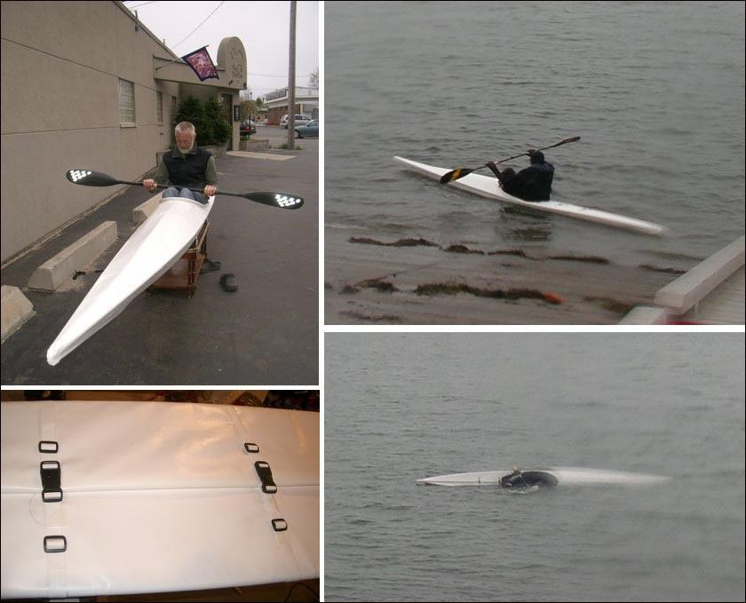

| (New) Sea Rover by Robert Wright (US) | Menu Last Page Next Page |
|

The lower left pic shows the "rolled" flap Bob is using on his aft deck in lieu of a zipper. It works much the same as the closure on a dry bag. Marcel Rodriguez first introduced this method on his Sea Pup. Bob also uses an arched inwale system he designed . It's construction is described in the "New Pages" section of the manual. Use the (BACK) key to return.
|
|